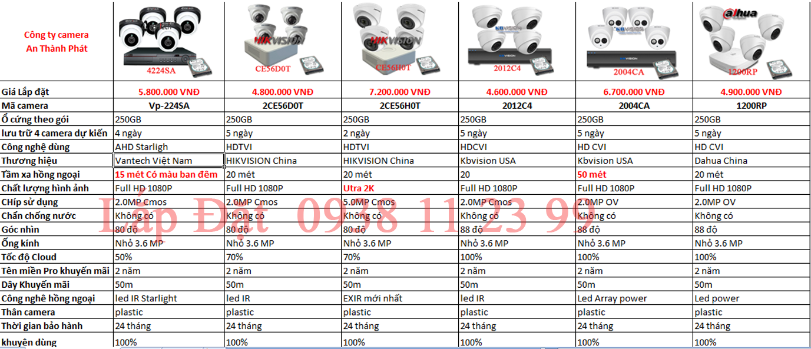

Báo Giá Lắp đặt camera Văn Phòng Quận Tân Phú

Tiêu chí lựa chọn lắp đặt camera văn phòng
- Lắp đặt camera văn phòng có nhiều dạng khác nhau, giám sát rõ chi tiết, có trường hợp lắp đặt camera quan sát cần có âm thanh để thu âm, một số trường hợp lắp đặt camera văn phòng ở quận tân phú có ánh sáng yếu vẫn có màu. với những gói camera trên với nhiều tiêu chí khác nhau âm thanh, độ phân giải, hồng ngoại và khả năng giám sát ánh sáng yếu, ngoài ra điều đặt biệt là góc quay của camera quan sát. với một số văn phòng nhỏ thì cần camera có góc quay lớn mới giám sát hết góc khuất trong văn phòng.
- Một số điều chú ý khi lắp đặt camera văn phòng tại quận tân phú như. vị trí góc lắp đặt phải giám sát hết toàn cảnh văn phòng, tránh những vị trí ánh sáng chiếu trực tiếp vào camera sẽ làm mờ hình ảnh camera quan sát, lắp đặt camera quan sát văn phòng ở quận tân phú ở những vị trí sao cho thấy được màn hình máy tính nhân viên . Những vị trí quan trọng cần giám sát .
- Điều quan trọng khi lắp đặt camera văn phòng công ty và gia đình quận tân phú là Mỹ thuật. Văn phòng đại diện hay văn phòng làm việc là nơi thường tiếp khách chính vì vây hệ thống camera quan sát phải được thi công chuyên nghiệp chất lượng tốt. Ngoài việc lựa chọn camera chất lượng thì nhỏ gọn mỹ thuật và giám sát qua mạng bằng điện thoại ổn định cũng là tiêu chí bạn nên quan tâm khi lắp đặt camera cho văn phòng.
Điểm khác nhau của các gói camera văn phòng công ty An Thành Phát tư vấn lắp đặt tại quận tân Phú.
Lắp đặt camera vantech cho văn phòng (gói camera 1 ) Đây là thương hiệu camera Việt Nam có trụ sở gần Quận Tân Phú do đó rất thuận lợi cho việc bảo trì bảo hành camera cho khách hàng. với gói này ưu điểm là hổ trợ ánh sáng yếu rất tốt vì có tích hợp công nghệ staright lắp đặt camera văn phòng ở những vị trí thiếu sáng sẽ cho hình ảnh đẹp hơn. Giá gói camera này cũng phù hợp với chất lượng và thương hiệu top 10 ở Việt Nam. Mẫu mã camera cũng được thiết kế rất mỹ thuật.
Lắp đặt camera HKVISION cho văn phòng (gói camera 2 ) Đây là thương hiệu số 1 thế giới về camera quan sát có nhà phân phối đặt tại quận tân phú. thương hiệu camera HIKVISION có chất lượng tốt độ bền cao. ưu điểm của gói camera này Giá thanh rẻ so với chất lượng nếu bạn không quá khắc khe về nguồn gốc xuất xứ. Lắp đặt camera quan sát Văn Phòng HIKVISION có mẫu thiết kế nỏ gọn đây là những điều mà HIKVISION làm nên tên tuổi của mình về ngành camera quan sát trên toàn thế giới.
Lắp đặt camera văn phòng có độ nét cao (gói camera 3 ) Đây là ưu điểm của gói camera văn phòng. Tuy giá thành trọn bộ chưa tới 8.000.000 VNĐ cho 1 gói 4 camera quan sát, nhưng chất lượng hình ảnh đạt đến chuẩn Utra 2K Gấp đôi chất lượng hình ảnh FULL HD 1080P đang thịnh hành trên thị trường hiện nay. nếu bạn muôn độ nét cao nên chọn gói này.
Lắp đặt camera Văn phòng KBVISION (gói camera 4 ) Điều đặt biệt của thương hiệu camera KBVISION là có trụ sở chính ngay đường Lỹ Bán Bích Phường Hiệp Tân Quận Tân Phú, rất thuận lợi cho bạn khi chọn thương hiệu này. ngoài ra ở đây là trung tâm bảo hành chính. bạn có thể mang sản phẩm trực tiếp đến hãng để bảo trì bảo hành và sửa chửa. Ngoài ra Lắp camera KBVISION bạn có nhiều cơ chế xem camera qua mạng bằng điện thoại tốc độ cao. tên miền và mã cloud có server đặt tại Việt Nam thì quá ưu điểm để bạn lựa chọn.
Lắp đặt camera có ậm thanh Văn phòng KBVISION (gói camera 5 ) Điều đặt biệt ở gói camera này là có tích hợp âm thanh ngay trên camera. không phải mua micro để gắn lên camera như trước đây nữa, có camera truyền tải âm thanh hình ảnh trên 1 sợi dây duy nhất. đây là ưu điểm nỗi bật mà công ty camera An Thành Phát thường lắp đặt cho các cửa hàng ở quận tân phú, đặt biệt ở quày thu ngây, hay quày tiếp tân, bộ phân kế toán của các nhà xưởng thì đây là lựa chọn hoàn hảo nhất.
Lắp đặt camera Dahua cho văn phòng (gói camera 6 ) Camera Dahua tuy không có đại lý phân phối ở quận tân phú nhưng đây là dòng sản phẩm camera chất lượng. Hình ảnh trung thực. thương hiệu camera Dahua được biết đến trên toàn thế giới. mẫu mã camera đẹp và sang trọng. Dahua có server đặt tại Việt Nam nên xem camera qua mạng bằng điện thoại với tốc độ rất nhanh bằng công nghê cloud mà khó có hãng nào Sánh bằng.